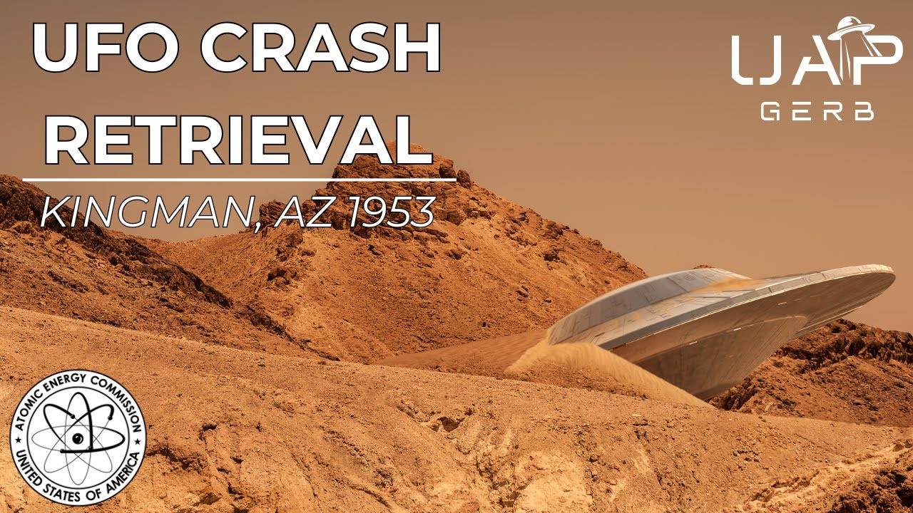

The 1953 Kingman, Arizona UFO Crash

Published: 2024-03-06 · Duration: 20:18 · Channel: UAP Gerb
Description
Today guys, we will be investigating the little-known UFO crash and crash retrieval that occurred just north of the small, desert town of Kingman, Arizona on the night of May 20, 1953. This alleged crash retrieval first surfaced in 1973, years before the resurfacing of the Roswell incident in which Jesse Marcel revealed his participation in the cover-up in 1978.
The first revelations of this retrieval occurred with UFO researcher Raymond Fowler's interview of an engineer on project Upshot-Knothole who was sent to analyze craft ballistics of the wreckage operating under the pseudonym Fitz Warner. It would later come to light that Fitz was indeed respected engineer Arthur Stansel who had an accomplished career in the US armed forces, civilian engineering at Wright Patterson, and the Atomic Energy Commission.
Besides Stansel's shocking testimony, his work under Dr. Ed Doll and Dr. Eric Wang alongside add interest to the alleged crash. Events around this time such as USAF regulation 200-2, the Robertson Panel, and the testimonies of Robert Jacobs & Robert Salas on UFOs and nukes add key context to the event.
Also testifying to the Kingman Crash is retired USMC vet and engineer Bill Uhouse who claimed to work on a flying saucer simulator based on the craft retrieved from the 53 Kingman Crash.
Strap in and don't crash as we analyze the Kingman UAP Crash!
0:00 Intro 1:08 Fitz Werner AKA Arthur Stansel Jr. 8:41 Stansel's Claims 11:14 Kingman Crash Context 13:16 Bill Uhouse 17:12 Additional Witnesses & Disinformation 18:44 Conclusion
Kingman Overview: https://www.ufoinsight.com/ufos/cover-ups/kingman-ufo-crash
Fitz Werner Interview: https://www.youtube.com/watch?v=ffONAXpPJH8&t=301s
Arthur Stansel Junior Backgroud: https://medium.com/@richgel99/1953-kingman-az-crash-retrieval-6eac40d724c7
Ray Fowler & Stansel: https://www.youtube.com/watch?v=L4CvjWEB6C8&t=212s
Operation Upshot-Knothole Docs: https://apps.dtic.mil/sti/tr/pdf/ADA121624.pdf
https://apps.dtic.mil/sti/tr/pdf/ADA073476.pdf
Dr. Ed Droll: https://ahf.nuclearmuseum.org/ahf/profile/edward-b-doll/
Dr. Wang: https://www.ufocasebook.com/Arizona.html
USAF Regulation 200-2: https://www.cia.gov/readingroom/docs/CIA-RDP81R00560R000100040072-9.pdf
UAP Gerb Stigma: https://www.youtube.com/watch?v=xKArN8S9bnM&t=4s
UAP Gerb Nukes: https://www.youtube.com/watch?v=-DK2u8HlhDE&t=14s
Bill Uhouse Testimony: https://www.youtube.com/watch?v=VxA-Y4enohQ
Uhouse Background: https://medium.com/@richgel99/william-bill-g-uhouses-marine-corps-service-verified-53890a291fac
How and Why On Simulator: https://web.archive.org/web/20220718203329/https:/www.howandwhys.com/former-area-51-engineer-claimed-testing-re-engineered-ufo-that-crashed-in-arizona-in-1953-with-four-aliens/
Leanord Stringfield On Crash (Part 1 and 2): https://github.com/richgel999/uap_resources/blob/main/1978_Mufon_Symposium_Stringfield.pdf
http://www.ignaciodarnaude.com/ufologia/FSR%201979%20V%2025%20N%205.pdf
Music by the Always Talented: https://www.youtube.com/channel/UCz71_7z7NphLPZ0l_7G3Llg
Nick Redfern on Kingman: (Pg 37): https://archive.org/details/crash-retrieval-conference-proceedings-3rd-annual-2005/page/37/mode/1up
ufo #uap #uapnukes #uapdisclosure #ufology #ufonews #ufosightings #uapsightings #ufofootage #uapfootage #hynek #condoncomittee #Jallenhynek #projectsign #projectgrudge #projectbluebook #bluebook #ufocongress #SOL #solfoundation #karlnell #Battelle #UFOreverseengineering #lockheed #skunkworks #lockheedmartin #rosscoulthart #fastwalker #blackvault #slowwalker #kingman #ufocrash #nickredfern
Transcript
Show transcript
It didn't start or end with Roswell. Throughout American and world history, there are numerous encounters of UAP crash and crash retrieval efforts with credible paper trails and eyewitnesses. Today, we investigate one of these encounters that occurred during the mass UFO wave of 1952 to 1954. Let's travel to the night of May 20th, 1953, to a small town situated between Hualapa Valley and the Servant Mountain Range called Kingman, Arizona, where something perplexing and inexplicable crashed into the desert. Hey guys, it's UAP Gerb. Today, I want to dive into the story of one of my all-time favorite alleged crash retrievals, the 1953 Kingman, Arizona UFO crash. This story is massively overshadowed by the Roswells of the world, yet features two extremely credible witnesses and surprising connections to our usual suspects, the AEC and Wright-Patterson Air Force Base. Is this crash fact or fiction? Well guys, we will do our very best to find out. The story of the Kingman crash first surfaced publicly in 1973, five years before Jesse Marcel famously told Stanton Freeman he was a part of the Roswell cover-up in order to pose with fake wreckage comprised of balsa wood and aluminum foil while the crash disc was secretly whisked away. In 1973, UFO researcher Raymond Fowler revealed shocking statements made and sworn into affidavit by a Wright-Patterson Air Force Base engineer and USAF project engineer on Operation Upshot Not Whole under the pseudonym Fritz Warner. And before we get into the story, what is this weird name Upshot Not Whole? This was a series of 11 nuclear test shots conducted in early 1953 at the Nevada Proving Ground, orchestrated by none other than the Atomic Energy Commission. The objective of this project was to utilize tactical nuclear weapons to ready the US military for atomic combat. These tests even oversaw a nuclear payload shot out of artillery cannons. An estimated 18 to 21,000 DOD personnel participated in this program in 1953. Anyways, back to Warner, let's hear his story. Warner stated to Fowler he was an engineer on USAF contract with the AEC for Operation Upshot Not Whole. His job was to measure blast effects on various types of buildings constructed for the tests. On May 20, 1953, Fitz spent most of the day at Frenchman Flat. Dr. Ed Dahl telephoned Warner that evening he would be doing a special job the following day. Joined by 15 other AEC specialists, Warner reported to Indian Springs Air Force Base. There he was put on a plane to Phoenix with all of his valuables left in the custody of the military police and eventually placed on a bus with blacked out windows. During the four hour ride, an Air Force Colonel told the personnel a super secret Air Force vehicle had crashed and these specialists were sent in to investigate their speciality and theirs only. When he finally got off the bus, Fitz observed two agonizingly bright spotlights centered on a crashed object surrounded by guards. In Fitz's own words, quote, the object was oval and looked like two deep saucers. One inverted upon the other. It was about 30 feet in diameter with convex surfaces top and bottom. These surfaces were about 20 feet in diameter. Part of the object had sunk into the ground. It was constructed of a dull silver metal like brushed aluminum. The metal was darker where the saucer lips formed a rim around which were what looked like slots. A curved open hatch door was located on the leading end and was vertically lowered. There was a light coming from inside but it could have been installed by the Air Force, end quote. Warner's duty was to attempt to determine the angle from which the object impacted into the sand and how fast the vehicle was moving with forward and vertical velocities at the time. The craft had sunk roughly 20 inches into the sand and featured no landing gear and shockingly no damage. No marks or dents on the surface not even scratches. Over time Fitz estimated the craft had been traveling at roughly 1200 miles per hour and amazingly Fitz claimed to glance at a guarded pitch tent where lied the body of a dead pilot. It appeared to be a four foot tall humanoid biologic with dark brown skin and a silvery metallic looking suit. Keep this pilot description in mind. After being interviewed on his crash velocity estimations over a tape recorder, Fitz managed to speak to someone who claimed to have glanced inside the craft and observed two swivel like seats as well as numerous strange and anomalous instruments in displays. Fitz finally returned to the bus and headed back to Phoenix. The Air Force Colonel had all 16 AEC personnel swear an oath not to reveal their findings and were instructed to write their reports longhand and to not type or reproduce. There is Warner's story truly fantastic and difficult to conceptualize under just a simple pseudonym right? Well what if I told you the enigmatic Fitz Warner's identity has been revealed but first quickly let's first review the affidavits signed by Fitz with Raymond Fowler as witness. This excerpt of the affidavit is from Fowler's book Casebook of a UFO Investigator under the section Crash Retrievals of the Third Kind. I, Fritz Warner, do solemnly swear that during a special assignment with the U.S. Air Force on May 21st, 1953, I assisted in the investigation of a crashed unknown object in the vicinity of Kingman, Arizona. The object was constructed of an unfamiliar metal which resembled brushed aluminum. It had impacted 20 inches into the sand without any sign of structural damage. It was oval and about 30 feet in diameter. An entranceway hatch had been vertically lowered and opened. It was about three and a half feet high and one and a half feet wide. I was able to talk briefly with someone on the team who did get a look inside only briefly. He saw two swivel seats, an oval cabin, and a lot of instrumentation and display. A tent pitch near the object sheltered the dead remains of the only occupant of the craft. It was about four feet tall, dark brown complexion, and had two eyes, two nostrils, two ears, and a small round mouth. It was closed in a silvery metallic suit and wore a skullcap of the same type of material. It wore no face covering her helmet. I certify that the above statement is true of fixing my signature to this document on this day of June 7, 1973, signed Fitz Warner, witnessed by Raymond E. Fowler. Fitz's identity was later on revealed and confirmed by Fowler as one Arthur Stancell Jr. Now, quite often his name is spelled S-T-A-N-C-I-L, which is incorrect in a confusion. It's S-T-A-N-S-E-L. But anyway, Stancell's background and credentials can be directly confirmed. Stancell began his career at Wright-Patterson Air Force Base at that time, Wright-Patterson Airfield, serving as a USAF aircraft engineer, test mechanical engineer for the Air Material Command after honorably taking part in the D-date landings of World War II. Arthur was additionally working at the Nevada Proving Grounds on May of 1953 when the crash occurred, specifically studying the effects of atomic blast on structures, as Fitz stated, and this was during Operation Upshot Knot Hole. To add even more credibility to Stancell, the engineer also worked on aspects of the Manhattan Project and for 16 years on the Apollo program. Huge thanks to Richard Geldrick Jr. for doing the digging on Stancell as you'll find in his linked medium article. So unlike some more controversial figures in ufology like Bob Lazar, we can in fact verify the background of Wright Pat, the AEC, and aircraft testing with Stancell. Let's start to break down and analyze the context of some of Stancell's claims. Remember first, his story came out in 1973 and 1978 was when Marcel revealed the truth of the Roswell cover-up. We can definitively rule out this accomplished engineer was just writing the coattail of the Roswell crash. Within Stancell's testimony, he mentions the night before viewing the wreckage receiving a phone call to report by one doctor, Ed Dahl, who was in fact a project director and physicist for Operation Upshot Knot Hole at the Nevada Test Site. Unfortunately, Dahl has long since passed and no statements were ever made by him about this alleged crash retrieval. However, there is another man with possibly even deeper connections to UFO crash retrieval. During his time working as an engineer at Wright Field from 1949 to 1960, Stancell worked in what was known as the Air Material Command Installation Division within the Office of Special Studies headed by Dr. Eric Wang. Dr. Wang was an Austrian-born graduate of the Vienna Technical Institute. In 49, Wang became the director of the Department of Special Studies at Wright Patterson where he worked with scientists from the Office of Naval Research and Dr. Vannevar Bush, who has some connections to the UFO phenomena and others from the Research and Development Board. Dr. Wang relocated his research from Wright Field to Kirkland Air Force Base in Albuquerque, New Mexico around the time of Operation Upshot Knot Hole. Tracking down record of Wang has proven to be extremely challenging. However, direct proof can be found of his role in the Department of Special Studies in the actual DOD operation Upshot Knot Hole unclassified document. The importance of determining Wang's credentials cannot be understated, seen as Wang is a figure in UFO lore suspected of having deep ties to reverse engineering and crash retrievals around this time. More investigating needs to be done here, but Wang allegedly led reverse engineering efforts under Kissinger. Wang was known to be a close associate of Victor Schauerberger, an operation paperclip scientist who developed concepts for flying discs for the Nazis. Wang, of course, is not the focus of today's video. Neither is Dahl, but Stansel serving under both Wang and Dahl to an extent during the 1953 crash is of note. Three months after the alleged Arizona crash in 1953, the USAF issued Regulation 200-2, which required all UFO reporting to be sent to USAF Intelligence and not Project Blue Book, the official USG investigation group at the time. This directly stovepiped UFO reporting leading to fewer credible reports making their way to Congress and the American people, fueling the growing UFO stigma. I talked about this a lot in my Stigma video, go check that out. If you watched my history on the UFO stigma, you will know the Robertson Panel was conducted to quell public interest in UFOs, and was commenced in January of 1953, four months before the Kingman crash. While Regulation 200-2 most definitely relates to the Robertson Panel, it is quite plausible to suspect that restricting UFO reporting was to keep a tight lid on previous and future crash retrievals like the Kingman Arizona crash and possibly Roswell. Also, a key piece here is the AEC's connection to Upshot Knothole and the Kingman crash. As my community can probably recite by heart, the 1954 Atomic Energy Agreement has been used to misclassify UFO material as quote, trans-classified foreign nuclear material to avoid declassification and restrict information to need to know basis. The 2024 NDAA Schumer legislation directly states the 54 Atomic Energy Act has been used by DOD and legacy programs to protect UFO program records and materials. And while we're at it, let's not forget the testimony of Lieutenant Robert Jacobs and Robert Salas of Maelstrom Air Force Base. If you have not seen my video on UFOs and nukes, I highly recommend watching to understand this anomalous connection of UFO to nuclear weapons. So the idea a UFO is active near the Nevada test range after 11 nuclear warheads were detonated in 1953 is far from surprising. Shockingly, Stansel was not the only credible whistleblower to make claims about the Kingman crash. Meet the under-the-radar alleged UFO reverse engineering whistleblower Bill Uhouse. Uhouse was featured on Stephen Greer's disclosure project in October of 2000 and made some astounding claims. Uhouse was a former mechanical engineer and 14-year USMC vet retired at the rank of captain with a history of flight testing of exotic experimental aircraft at Wright Pat. While working for a defense contractor and Wright Patterson Air Force Base, Uhouse claimed to work as a pilot and design engineer for a flying disk simulator. The simulator, according to Bill, became operational in 63 to 64 and was based off a recovered disk retrieval. And you can probably guess the crash he names. As I watch, the reason why I'm saying this is because the simulator wasn't actually functional until around 1958 where the simulator was actually operable. The simulator that they used or the craft that they used to build, which is a 30-meter one, was the one that the crashed in Arizona, Kingman, Arizona, back in 53 or 52, I think it was 53. According to Uhouse, the craft was taken to Area 51 slash the Groom Lake facility and the dead pilots were taken to Los Alamos, part of the AEC. Gotta mention, Uhouse also makes numerous other statements including touching on a recovered extraterrestrial humanoid codenamed J-Rot. However, this of course is not the subject of our video. Because Uhouse is making such high-profile claims and disclosing through Greer, he must be riddled with red flags, no? Guys, I have to do this myself too, but let's start removing whistleblowers from the stain of Greer and everything he touches. While Greer himself is egotistical, money-driven, and very problematic, he has platforms numerous incredible individuals to tell their tales, including Wagan, Uhouse, Herrera, Bushman, etc. One common thing you will learn from the men with incredible stories, they only disclosed through Greer because they knew no other route, and many, like Herrera, have regretted going through Greer. Anyways, Uhouse worked on a flight sim based off the 53 crash disc. These claims are far too crazy to be taken seriously when we cannot verify a man's credentials, who discloses through Greer similar to Don Phillips. Thanks again to the investigation done by Richard Gelderich Jr., Uhouse's storied history in the Marine Corps can be indeed verified. Remember, Uhouse claims 14 years in USMC services, 10 years in the Corps, and 4 years working with USAF in private industry on experimental testing. In this clipping from March 3, 1949, we can see proof of William G. Uhouse's re-enlistment with the Corps after previous USMC service, and again on the 30th of March, 1953. We can see in the evening times a newspaper article on Uhouse, this article confirms 8 years in USMC service, and tours in Korea for Uhouse, and importantly shows Bill's demonstrating capabilities of the Second Engineers Battalion. Bill's role in the Second Engineers Battalion was also confirmed in the service company report. And lastly with Uhouse, it's just kind of important to note in this How and Why article, it's stated Uhouse was invited by a man from Link Aviation, a simulator manufacturer company, to aid in the building of the F-102 simulator, B-47 simulator, and later on the flying disc simulator based off the Kingman crash. And quickly, I just want to cover some additional witnesses to this case who vary wildly in believability and credibility. In 1997, Leonard Stringfield, a respected UFO researcher, was approached by a pilot after a lecture at the Lunken Airport in Cincinnati, Ohio. The pilot claimed to have been present at the crash site in 1953 and gave a recount of the biologics recovered that was very similar to Stansel, around four feet tall, large eyes, brown skin on face, and silvery metallic suits. And in 1994, another man codenamed JLD approached Stringfield, making similar claims about the crash but died shortly after. The glaring red flag of these unnamed and unaccredited sources came from one Judy Wolcott, who claimed to UFO researcher Don Schmidt, her husband, a Vietnam conflict officer, wrote to her saying he had been present at a UFO crash retrieval in Kingman, Arizona, where biologics had been recovered. Wolcott claimed her husband unfortunately was killed by NVA in the war. Wolcott was ousted by author Nick Redfern, who discovered that her events absolutely did not add up. Her husband had not died in Vietnam, and her own daughter stated Judy often lied and made up stories. Whether this was an attempt at a claim to fame or purposeful disinformation, we do not know. However, her case and testimony and the falsity of it is worth mentioning. What's going on guys? I hope everybody enjoyed this look into the Kingman, Arizona UFO crash. This case is of course severely overshadowed by its older brother at the 1947 Roswell crash, so little attention is paid to this case. I think it's incredibly interesting where things get hairy for me like most cases because I do tend to focus on nuts and bolts with my videos is the biologics. The 4 foot tall humanoid looking creatures with brown faces and silvery metallic suits, it gets strange. One theory I've heard to debunk this case, which is very strange for me, is USAF secretly testing aircraft and biologic effects when flying through nuclear clouds. So aircraft were remote controlled and chimpanzees were put in suits and crashed and killed. This of course doesn't explain the craft resistance to deformation at 1200 miles per hour, as Stancil said, but that's one of the funny debunks I've come to see. What do you guys think about the Kingman crash? If you're from Arizona and from the area and there's some more lore to this case that I am not hearing about, let me know. I'd love to hear from you guys some people boots on the ground from the actual area, so sorry for the long break guys, we'll be back to normal posting now. If you like this video, please remember to like and subscribe. The channel is doing so well. We're almost at 2000 subs and growing fast, so thank you guys so much for being here. As always, have a wonderful day and thanks for tuning in. I'll catch you next time.
Entities
- People:
- Arthur
- Arthur Stancell Jr.
- Bill
- Bill Uhouse
- Bob Lazar
- Bushman
- Dahl
- Don Phillips
- Don Schmidt
- Ed Dahl
- Eric Wang
- Fowler
- Fritz Warner
- Greer
- Judy
- Judy Wolcott
- Kissinger
- Leonard Stringfield
- Nick Redfern
- Pat
- Raymond E. Fowler
- Raymond Fowler
- Richard Gelderich Jr.
- Richard Geldrick Jr.
- Robert Jacobs
- Robert Salas
- Roswell
- Stancell
- Stansel
- Stanton Freeman
- Stephen Greer's
- UAP Gerb
- Upshot Knot Hole
- Upshot Knothole
- Vannevar Bush
- Victor Schauerberger
- Wang
- William G. Uhouse's
- Wolcott
- Wright
- Wright Pat
- Wright Patterson
- Wright Patterson Air Force Base
- Wright-Patterson Airfield
- Places:
- Albuquerque
- Arizona
- Cincinnati
- Hualapa Valley
- Kingman
- Korea
- Los Alamos
- Nevada
- New Mexico
- Ohio
- Phoenix
- Stringfield
- US
- USMC
- Vietnam
- the Lunken Airport
- the Nevada Proving Ground
- the Nevada Proving Grounds
- the Nevada Test Site
- the Servant Mountain Range
- Organizations:
- AEC
- Air Force
- Apollo
- Congress
- DOD
- Dahl
- F-102
- Fitz
- Fitz Warner
- Fitz Warner's
- Fowler
- Frenchman Flat
- Herrera
- Indian Springs Air Force Base
- JLD
- Kirkland Air Force Base
- Manhattan Project
- NVA
- Operation Upshot Knot Hole
- Operation Upshot Not Whole
- Project Blue Book
- Stancell
- Stancil
- Stansel
- The Air Force Colonel
- UAP
- USAF
- USG
- USMC
- Uhouse
- Upshot Not Whole
- Wagan
- Wang
- Warner
- Wright-Patterson Air Force Base
- the Air Force
- the Second Engineers Battalion
- the 54 Atomic Energy Act
- the Air Material Command
- the Air Material Command Installation Division
- the Atomic Energy Commission
- the Department of Special Studies
- the Office of Naval Research
- the Office of Special Studies
- the Research and Development Board
- the Robertson Panel
- the Roswells of the world
- the Second Engineers Battalion
- the U.S. Air Force
- the Vienna Technical Institute